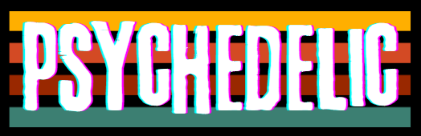
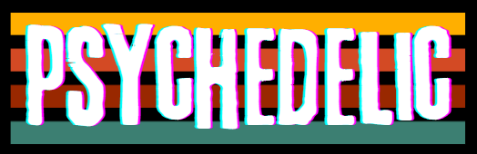

The Stroop effect is a psychological phenomenon where there's a delay in the reaction time of a task when the color of a word is incongruent with the word itself. In other words, it becomes harder to name the color of the ink a word is printed in when the word itself spells out a different color. This effect showcases the interference that occurs when automatic processes (reading the word) clash with controlled processes (naming the ink color). For example, if the word "BLUE" is written in red ink, individuals might take longer to say "red" compared to if the word was written in blue ink. This delay happens because reading the word "BLUE" is an automatic response that interferes with the controlled response of naming the ink color. The Stroop effect is often used in psychology to study attention, cognitive processing, and automatic versus controlled thinking.
In a moment you will be given a series of words. Your task is to classify each word by the COLOR of the font, NOT the text content. You will do this by typing the corresponding first letter (i.e. "g" for green)
Since this is PSYCHEDELIC mode, there will be an additional highlight color (not standard practice for the Stroop test) and your results won't be recorded. Good luck.
 
